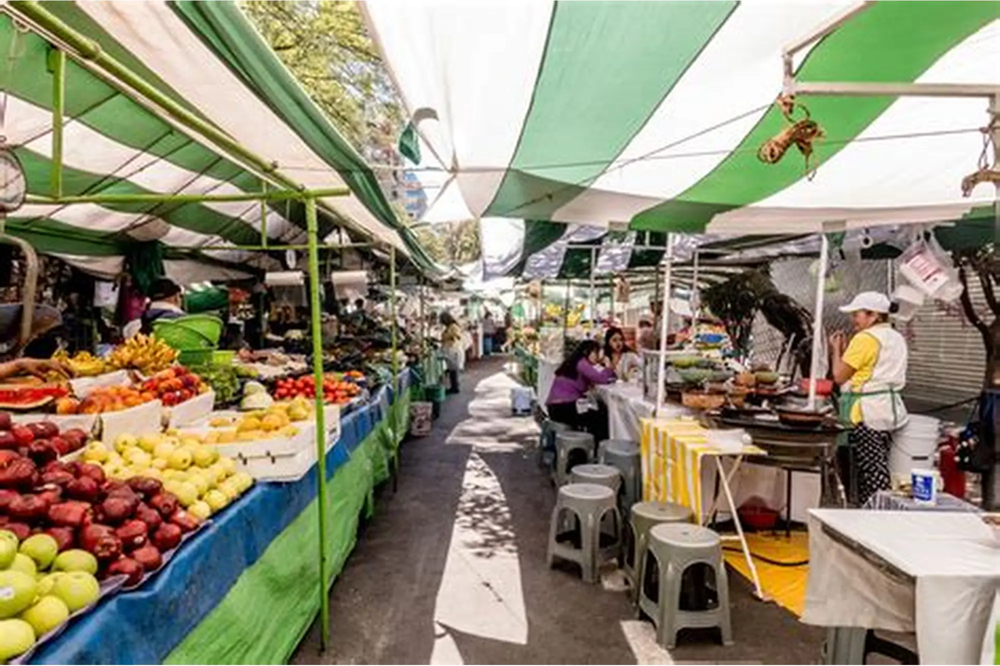

História
A Barraca 013 é um empreendimento alimentício que atua há mais de 30 anos nas feiras de Praia Grande, levando tradição, sabor e qualidade para moradores e visitantes da cidade. Nossa história começou como uma ramificação de uma tradicional barraca de pastéis conhecida como “Pastel do Japonês”. Quando o antigo estabelecimento encerrou suas atividades devido a problemas de saúde do proprietário, um de seus funcionários decidiu continuar aquele legado. Com dedicação, esforço e alguns investimentos, nasceu a Barraca 013. Desde então, seguimos trabalhando com o mesmo compromisso: oferecer produtos de qualidade, atendimento acolhedor e uma experiência que faz parte da história das feiras da cidade.

Quem Somos
A Barraca 013 é especializada em pastéis de diversos sabores, preparados com ingredientes selecionados e muito cuidado no preparo. Nossa missão é oferecer alimentos saborosos, frescos e com aquele toque tradicional que conquista clientes há décadas. Além dos famosos pastéis, também contamos com opções de salgados e outros alimentos para diferentes gostos. Nosso cardápio de bebidas é variado e inclui o tradicional caldo de cana, água, refrigerantes e sucos naturais, garantindo uma experiência completa para todos os clientes.
Nosso Negócio
Ao longo dos anos, a Barraca 013 se tornou um ponto de encontro para famílias, amigos e frequentadores das feiras de Praia Grande. Valorizamos um atendimento próximo e amigável, buscando fazer cada cliente se sentir em casa. Mais do que vender alimentos, queremos manter viva a tradição das feiras e continuar criando boas lembranças através do sabor e da qualidade dos nossos produtos.